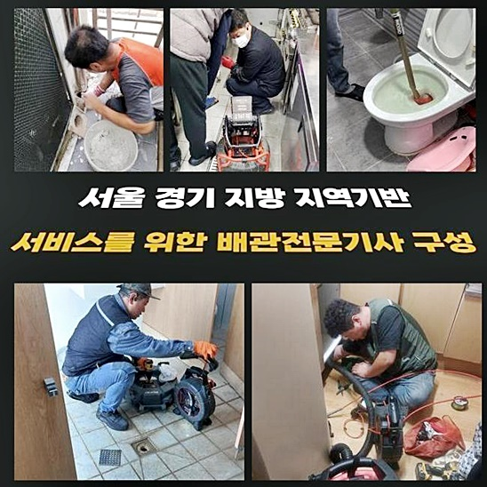
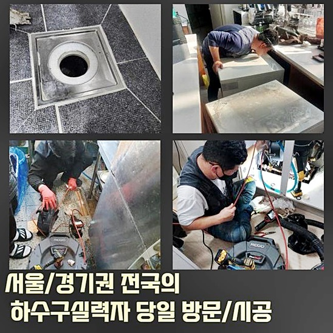
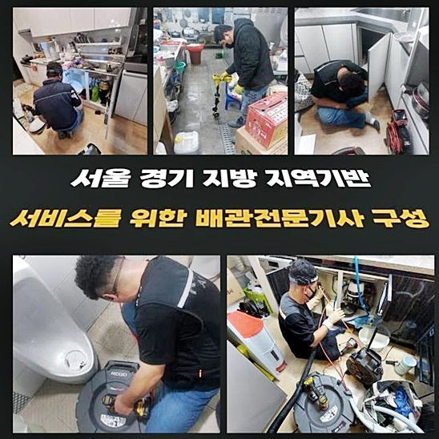
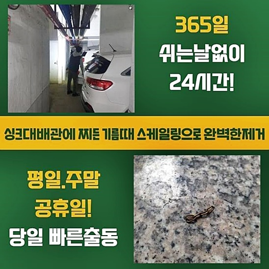
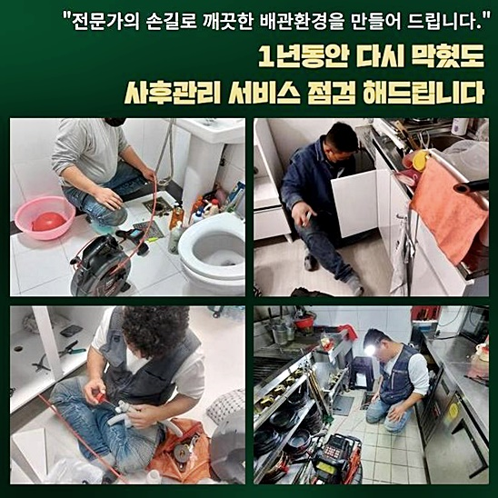
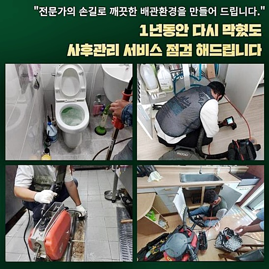

🏠 성남 판교동싱크대배수관막힘 삼평동 하수구뚫는곳 설비공사
성남 판교동 싱크대막힘 전문 시공 후기

📋 작업 개요
- 위치: 성남 판교동, 판교동, 성남
- 서비스 유형: 싱크대막힘, 하수구막힘, 배관막힘, 뚫는업체, 설비공사, 악취차단
- 작업 일시: 2024. 8. 3. 23:08
- 업체명: 하수구수사대 (010-5615-2118)
🔍 문제 상황
성남 판교동싱크대배수관막힘 삼평동 하수구뚫는곳 설비공사
우리들은 의뢰자님들이 구하시는 시간대에 아무때라도 이동해 드리고 있고 조속히 조치합니다
저녁 10시 이후나 빨간날인 경우라 해도 바로 방문드려 공사진행 합니다
의뢰자님의 부탁에 빠르게 대처하여 퀄리티있는 클리닝 활동을 실시하는 것이 우리팀의 기본지침입니다
정확하고 신뢰감있는 업무과정으로 큰 만족도를 느끼실 수 있게끔 노력을 기울인답니다
초반부에는 이유를 판정하는 데에 에너지가 적지 않게 소용되었지만 건축물의 배수관이 범인이었다는 사실을 확정하고 대책을 수립했어요
이를 통해서 인접 거주자들의 불편을 막고 이용객들이 일상적으로 사용하도록 조치할 수 있었죠
이런 사태는 여러 까닭으로 나타나기 때문에 발빠른 응수가 불가결합니다
저흰 항시 의뢰인분의 부탁에 빠르게 응대하여 질높은 활동을 해나갈 것입니다
빌딩 안에서 나타난 물막힘 양상은 작년 10월부터 이어져 온걸로 도착 후에 듣게 되었죠
이 문제로 근방의 자영업자들에게 거북함을 유발하게 했는데 유독 화장실과 관련된 활동이 힘들었다고 말씀하셨어요
이런 부분은 영업에 막중한 장애를 일으켰기에 재빠른 대응이 불가무했죠
물이 막히는 상황은 건축물의 설립 연도 그것에 더하여 급격한 온도변화 등 여러 동기들로 나타나는 것이죠

🔎 원인 분석
💡 전문가 진단: 정밀 진단 장비를 사용하여 슬러지의 고착 여부를 판명하고 타격/세척 작업을 실시했습니다.
그렇기 때문에 근원점을 알아보기 위해서는 여러 변수를 고려해야 한답니다
보통의 주택공간에서 여러 측면의 고장을 처리한 것을 포함해 진중한 마음가짐으로 언제나 전문적 내용을 숙지하는 태도를 견지하여 완성도를 높인답니다
우리들은 고성능의 배관내시경과 석션기기로 시작하여 물이 유출되는 지점을 파악하게 만들어주는 여러 기기들을 갖추고 있어서 기타 전문가들과 비교 상등이라 불릴 수 있었답니다
이러한 기기들을 기초로 문제되는 물질을 없애는 작업을 이행중인데요
저희들은 잽싸게 차단의 까닭을 구조물의 바닥면에 매립된 배수관에서 찾아냈어요
이 부위는 주변부의 상황때문에 용이하게 발견된 것은 아니었지만 고약한 트러블이 발발한 처소였어요
즉각적으로 적합한 기기를 이용하여 고장을 빠르게 해결하게 되었는데요
일반적인 거주지에서부터 공용 시설까지 여러방면에서 갑작스럽게 목격되는 말썽이기 때문에 전문인의 방문이 필수라고 말씀드릴 수 있어요
혹시 배관차단이 지속해서 나타나는 경우라면 테크니션의 손길이 요구되며 무분별하게 조치하다가는 도리어 문제상황만 악화될 것입니다
그러니 여러가지 곤란을 마주하지 말고 기술자에게 의뢰하는 게 마땅합니다
기기들이 배수관에 끼이게 될 가망이 높았기에 플렉스샤프트 말고 스프링 기구를 활용하여 높은 속도로 작동하여 찌꺼기를 소제하였고 수십번 반복한 결과 배수관을 청결하게 바꿔냈습니다
가정내의 욕실과 개수대쪽에 체결된 배수관에 누증된 이물들을 처치한 뒤 고압 물세정을 이용 원상복구할 수가 있었는데요
이로서 한층 깔끔해진 배수관을 지속하고 있어요
빌라나 아파트를 막론하고 물막힘 현상을 없애기 위해선 일차적으로 주된 이유를 확인하셔야 합니다

🔧 작업 과정
침전물을 속히 소쇄하고 배관카메라를 사용해서 하수관 내측을 보고 어떠한 막힘이 벌어진 것인지 검토했어요
보이는 부분만 처치하는 것에만 몰두하지 않고 근원적인 포인트를 그냥 놔두게 된다면 시공이 지나 시간이 흘러 쉽게 막힘이 발발할 수 있어요
그러므로 저희들은 온전한 근원을 발견하지 못하면 비용발생이 되지 않는다는 준칙을 세워두고 있죠
고객님을 향한 우리의 이런 태도로 훌륭한 결과를 드릴 수 있었습니다
저희팀은 선제적으로 위쪽의 잔재들을 소쇄하기로 결정내렸어요
이것에 대하여 손님에게도 고하였고 배관고장이 갑작스럽게 벌어진거라 하시더라고요
비전문가들은 동기를 파악해내기 난해하지만 저희들은 여러 고초 속에서도 배테랑들로만 조직되어서 어떤 성향의 고장이라 하여도 대응할 수 있어요
저희팀은 능수능란한 전문인으로 결성돼 있고 이번에 방문하였던 분도 신뢰할만한 베테랑이셨어요
이런 상황을 갖추고 수리하므로 힘겨운 트러블도 헤쳐 나갈 수 있어요
배수관 전용 cctv를 삽입하여 관로의 모양새를 관측했더니 다량의 찌꺼기가 누증된 걸 직시할 수 있었죠
이를 기타 배수관과 결부된 건 아닐지해서 조사해보는 것이 좋겠다는 마음으로 싱크대까지 펼쳐진 관로를 점검하기로 하였어요
해당되는 부위로 이동하여 내부 현황을 배관카메라로 검열했더니 주방의 관로와 접합되어 있었죠
이를 통해 생겨나게 된 까닭을 파악하고 조치를 강구할 수가 있었답니다
보는 것처럼 면밀한 확인과 재빠른 처리가 관로 개문작업의 과정에서 중대한 몫을 맡는다는 것을 알 수 있었습니다
또다른 손님분께선 빠르게 해결이 필요하다며 바로 점검을 구하셨는데요
전문가는 일사천리로 그곳에 도달하여 사태를 잠재우기 위하여 요망되는 기기들을 꼼꼼하게 차에 실었죠
현재의 문제점을 파악하려 수돗물을 흘려보냈을 때 느릿느릿 사라지는 걸 볼 수 있었죠
이건 관로에 차단이 발생하였음을 알려주는 것이었어요
사용량이 많아지면서 더 느려지는 모양새를 만날 수 있어요
이에 저흰 올바른 기술력을 써서 차단된 관로를 능률적으로 처리했어요
배관에 일어난 고장은 전문인의 조력과 적기에 완결하는 것이 필요합니다


✅ 작업 완료
본공사 과정에선 휘어진 배수관 내측을 확인해봐야 하기에 필요시되는 기계들을 전부 활용하여 경제적으로 수리를 시행하였어요
오물탱크에 결부된 배수관까지 부드럽게 유속이 이어지게끔 열성적으로 일해나가고 있어요
예측과 다르게 터질 수 있는 사태들에도 빠르게 대처하여 퀄리티있는 결과물을 만들려 공들여 일합니다
미약한 증세라고 대수롭지 않게 간주하고 방관하시는 분들이 존재하는데요
이것들은 더더욱 어려운 상황을 유발시키는 동기가 될 수 있어 이상증세를 느끼신다면 속히 진단의뢰를 하시는게 옳습니다
문의자께서 신뢰감 넘치는 성과를 만나시게끔 신중하게 노력하겠습니다




⚠️ 주방 싱크대 배관 막힘 예방 수칙
- ✅ 기름기가 묻은 식기나 프라이팬은 설거지 전 키친타올로 반드시 기름때를 닦아내세요.
- ✅ 주기적으로 싱크대 개수대에 뜨거운 물을 가득 받아 한 번에 내려 배관 내부 기름을 씻어내세요.
- ✅ 배수구 거름망을 미세한 필터로 사용하시고 음식물 찌꺼기가 틈으로 새어 들지 않게 관리하세요.
- ✅ 베이킹소다와 식초를 뜨거운 물과 함께 일주일에 한 번씩 부어주면 배관 살균과 막힘 예방에 좋습니다.
💡 핵심 정리
- 확실한 장비 작업(내시경 점검 및 샤프트 스케일링)으로 원인을 뿌리 뽑습니다.
- 작업 후 1년 이내에 동일한 부위 재발 시 100% 무상 A/S 서비스를 보장합니다.
- 서울 · 경기 · 인천 전 지역에 24시간 언제든 긴급 출동할 수 있도록 항시 대기 중입니다.
❓ 자주 묻는 질문 (FAQ)
🚨 성남 판교동 싱크대막힘 문제로 고민이신가요?
정확한 원인 진단과 확실한 시공으로 재발 없는 해결을 약속드립니다.
24시간 긴급 출동 | 서울 · 경기 · 인천 전지역 | 1년 내 재발 시 무상 A/S